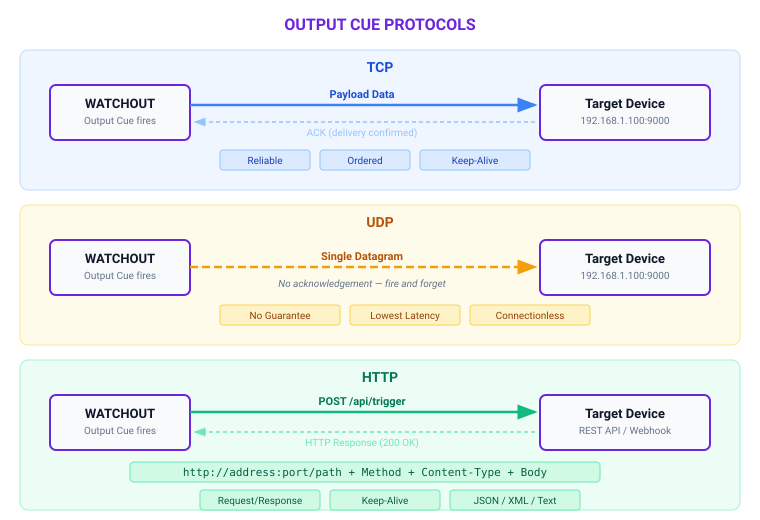

Output Cues
Output cues are the mechanism for sending external messages synchronized with timeline playback. When the playhead reaches an output cue, WATCHOUT transmits a string payload to an external system over TCP, UDP, or HTTP — enabling tight integration with automation controllers, show control middleware, lighting desks, and any network-accessible device that accepts string commands. Unlike media cues that render content over a duration, output cues are point-in-time events: they fire once at their start time and have no duration.
What Output Cues Are
An output cue is a distinct cue type — separate from control cues — that sends string data to an external network destination when the playhead reaches its position on the timeline. Output cues do not affect WATCHOUT's internal playback state; their sole purpose is outbound communication.
Key characteristics:
- Point-in-time execution — an output cue fires at its start time and completes immediately. It has no duration and no fade-in or fade-out.
- String-based payload — the cue sends a single string value. This is the only output format currently supported.
- Three transport protocols — TCP, UDP, and HTTP. There is no OSC output from output cues.
- Independent of timeline-level expression settings — output cues do not check the timeline's expression-enabled flag. If the playhead reaches the cue and any cue-level condition is satisfied, it fires.
Creating an Output Cue
- Position the playhead at the time where you want the message to be sent.
- Open the Timeline menu or right-click on the timeline to access the context menu.
- Select Add Output Cue.
- The new cue appears at the playhead position. Select it to open its properties.
- Configure the protocol, address, port, and payload string in the Cue Properties panel.
- Optionally, assign a name to the cue for identification in the timeline.
Give every output cue a descriptive name (e.g., Lights_Scene3_Go, Fog_Machine_Start). In a complex show with dozens of output cues, unnamed cues are difficult to audit and debug.
Output Cue Properties
Select an output cue to view its properties. The following fields are available:
| Setting | Purpose | Default / Notes |
|---|---|---|
| Name | Optional display label for the cue | None — unnamed by default |
| Protocol | Transport protocol: TCP, UDP, or HTTP | Must be set explicitly |
| Address | Destination IP address or hostname | None — must be specified |
| Port | Destination port number (0–65535) | None — must be specified |
| Path | URL path appended to the address (HTTP only) | None |
| HTTP Method | HTTP request method: Post, Put, or Get | Post |
| HTTP Content Type | Body content type: Json, Xml, or PlainText | Json |
| Keep-Alive | Reuse the TCP/HTTP connection across multiple cues | true |
| Data | The string payload to transmit | Empty string |
Protocols
WATCHOUT output cues support exactly three transport protocols. There is no OSC protocol for output cues.
| Protocol | Description | Applicable Fields |
|---|---|---|
| TCP | Sends the payload over a persistent TCP connection to the target address and port. Reliable, ordered delivery. | Address, Port, Keep-Alive, Data |
| UDP | Sends the payload as a single UDP datagram. No delivery guarantee, but lowest latency. | Address, Port, Data |
| HTTP | Sends the payload as the body of an HTTP request to the target address, port, and path. | Address, Port, Path, HTTP Method, HTTP Content Type, Keep-Alive, Data |

HTTP Configuration
When the protocol is set to HTTP, three additional fields become relevant:
HTTP Method controls the request verb:
| Method | Use Case |
|---|---|
| Post (default) | Sending commands or data to a REST API endpoint |
| Put | Updating a resource on a REST API endpoint |
| Get | Triggering an action via URL — the payload is typically empty for GET requests |
HTTP Content Type sets the Content-Type header on the request:
| Content Type | Header Value | When to Use |
|---|---|---|
| Json (default) | application/json | REST APIs expecting JSON payloads |
| Xml | application/xml | SOAP services or XML-based automation protocols |
| PlainText | text/plain | Simple string commands or legacy HTTP endpoints |
Path is appended to the address and port to form the full URL. For example, with address 192.168.1.100, port 8080, and path /api/trigger, the request is sent to http://192.168.1.100:8080/api/trigger.
HTTPS is supported by setting the port to 443. When port 443 is used, WATCHOUT sends the request over HTTPS instead of HTTP.
The Keep-Alive setting applies to HTTP connections as well as TCP. When enabled (the default), WATCHOUT reuses the underlying connection for subsequent requests to the same address and port, reducing connection overhead in shows with many rapid output cues.
HTTP output cues do not support custom authentication headers. If the target API requires authentication, use a proxy or middleware service that adds the necessary headers before forwarding the request to the final destination.
TCP and UDP Configuration
For TCP and UDP protocols, configuration is straightforward:
- Address — the IP address or hostname of the target device. Must be reachable from the WATCHOUT machine on the show network.
- Port — the port number the target device is listening on.
- Keep-Alive (TCP only) — when
true(default), the TCP connection remains open after sending, allowing subsequent output cues to the same destination to reuse the connection. Whenfalse, the connection is closed after each transmission.
UDP does not use the keep-alive setting because UDP is connectionless by nature.
UDP does not guarantee delivery. If an output cue fires over UDP and the target device misses the datagram due to network congestion or packet loss, the message is lost with no retry. For safety-critical or mission-critical triggers, use TCP or HTTP and verify receipt at the application level.
Payload Data
The Data field contains the string payload sent to the target. This is the only output format currently supported — there is no binary or structured-object mode.
The Data field supports expressions, allowing you to embed dynamic variable values into the payload at runtime. This makes it possible to send show state information to external systems without needing separate variable cues.
Formatting considerations:
- JSON payloads — when using HTTP with the Json content type, ensure the data field contains valid JSON (e.g.,
{"command": "go", "scene": 3}). - XML payloads — when using Xml content type, provide well-formed XML in the data field.
- Plain text and raw TCP/UDP — for TCP and UDP protocols, or HTTP with PlainText content type, the data string is sent as-is. Include any required delimiters, line endings, or framing characters that the target device expects.
- Empty payloads — for HTTP GET requests or simple trigger-on-connect TCP workflows, the data field can be left empty.
Escape Sequences
String output payloads support the following backslash escape sequences for encoding special characters:
| Sequence | Meaning |
|---|---|
\n | Newline (line feed) |
\t | Tab |
\xNN | Arbitrary byte value in hexadecimal (e.g., \x0D for carriage return) |
\uNNNN | Unicode code point |
Bytes with the value 0xff are ignored in output and will not be transmitted. Avoid using \xFF in payload data.
Important Behavior Notes
- Point-in-time firing. Output cues execute instantaneously at their timeline position. If the playhead jumps past an output cue (for example, via a control cue jump or manual scrub), the output cue does not fire. It only fires when the playhead reaches the cue's position during normal forward playback.
- Asynchronous transmission. HTTP requests (and other output cue transmissions) are sent asynchronously and do not block timeline playback. The playhead continues advancing immediately after the cue fires, regardless of how long the target takes to respond.
- Connection errors are non-fatal. If an output cue fails to connect to the target (e.g., the target is offline, the connection is refused, or a timeout occurs), the error is logged but does not stop show playback. The show continues uninterrupted.
- No timeline-level expression check. Unlike some other cue types, output cues do not evaluate the timeline's expression-enabled setting. This means an output cue will fire even if timeline-level cue expressions would otherwise suppress cue activation. However, output cues do respect their own cue-level conditional trigger if one is set.
- Separate from control cues. Output cues and control cues are distinct cue types with different purposes. Control cues affect WATCHOUT's internal playback state (play, pause, jump). Output cues send data to external systems. Do not confuse the two.
Use Cases
Triggering automation systems. Send a TCP or UDP command to a show automation controller (e.g., a PLC or industrial control system) at a precise moment in the timeline — for example, starting a motorized set piece movement exactly when a video transition begins.
Show control middleware. Send HTTP requests to middleware platforms (such as Medialon, Crestron, or custom Node.js servers) that coordinate multiple subsystems. An output cue can notify the middleware that a specific show moment has been reached, allowing it to trigger downstream actions.
External effects. Fire fog machines, pyrotechnics controllers, or water features by sending a network command at the exact frame. Combine with TCP for reliable delivery or UDP for minimal latency.
Lighting integration. Send string commands to lighting control systems that accept network triggers. While WATCHOUT supports Art-Net for direct DMX control via Art-Net Fixture Cues, output cues provide an alternative path for systems that accept TCP, UDP, or HTTP commands instead of DMX.
Logging and monitoring. Send HTTP POST requests to a logging server each time a key show moment is reached, creating an audit trail of show execution timing.
Best Practices
- Keep payloads deterministic and documented. Every output cue's protocol, address, port, and data string should be recorded in your show documentation. When multiple operators or integrators work on the same show, undocumented output cues become a debugging liability.
- Test cue timing at full playback speed. Output cues fire at the playhead's real-time position. Test with the show running at normal speed, not in scrub or step mode, to validate that external systems respond within acceptable latency.
- Validate on the production network. Network behavior differs between a single-machine bench test and the actual production network. Firewall rules, VLANs, and switch configurations can all prevent output cues from reaching their targets. Test on the same network architecture used in the live show.
- Use keep-alive for rapid-fire cues. If multiple output cues target the same TCP or HTTP endpoint in quick succession, leave keep-alive enabled (the default) to avoid connection setup overhead on every cue.
- Prefer TCP or HTTP for critical triggers. Reserve UDP for latency-sensitive, non-critical messages where occasional packet loss is acceptable. For anything that must arrive reliably, use TCP or HTTP.
- Combine with conditional triggers for dynamic shows. Attach a conditional trigger expression to an output cue so it only fires when a variable meets a specific condition — for example, only sending a fog command when
FogEnabled > 0.
If external systems controlled by output cues are safety-critical (e.g., pyrotechnics, motorized scenery, emergency lighting), include operator confirmation and independent safety interlocks outside of timeline automation. WATCHOUT output cues are a show control tool, not a safety system.
Troubleshooting
| Problem | Cause | Fix |
|---|---|---|
| Output cue does not fire | Playhead jumped past the cue instead of playing through it | Ensure playback runs through the cue position; output cues do not fire on scrub or jump |
| Target device does not respond | Incorrect IP address or port | Verify the address and port match the target device's listening configuration |
| TCP connection refused | Target device is not listening or a firewall is blocking the port | Confirm the target service is running and the port is open on both host and network firewalls |
| UDP message never arrives | Packet loss on the network, or target is not listening | Verify the target is listening on the correct port; consider switching to TCP for reliable delivery |
| HTTP request returns an error status | Wrong path, method, or content type for the target API | Check the path, HTTP method, and content type against the API documentation of the target system |
| Cue fires but payload is malformed | Data field contains invalid JSON/XML for the selected content type | Validate the data string format independently (e.g., paste into a JSON validator) before entering it in the cue |
| Cue fires even though timeline expressions are disabled | Output cues do not check the timeline-level expression setting | This is expected behavior; use a cue-level conditional trigger to gate the output cue instead |
| High latency on HTTP output cues | Keep-alive is disabled, causing a new connection per cue | Enable keep-alive (the default) to reuse connections |
Related Articles
- Control Cues — separate cue type for playback state changes (play, pause, jump)
- Conditional Cues — attach conditional trigger expressions to output cues
- Variables and Variable Cues — variable-driven automation for dynamic show control